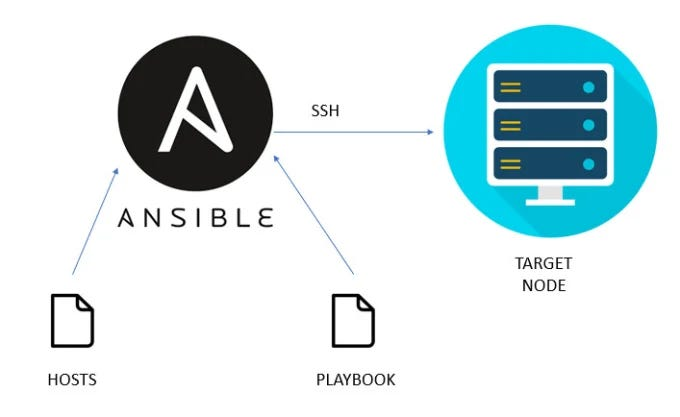
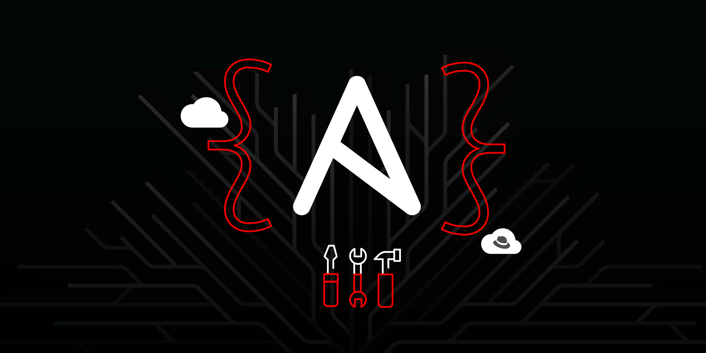
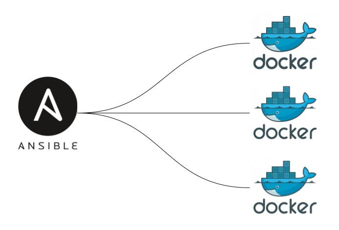

Projects 📊

AWS Infrastructure Setup & Automated Deployment with Ansible
This project demonstrates how to AWS infrastructure setup and application deployment using Ansible.
Automated Server Configuration with Ansible
Provision and configure Linux servers automatically with Ansible playbooks.
Ansible Tasks Labs
Hands-on labs with multiple Ansible automation scenarios and tasks.
Automated Nginx Deployment with Ansible & Docker
Deploying Nginx inside Docker containers on AWS EC2 using Ansible.

Graduation Project: Neural Networks Using FPGAs and ASICs
Research & implementation of neural networks hardware acceleration – Grade: Excellent.